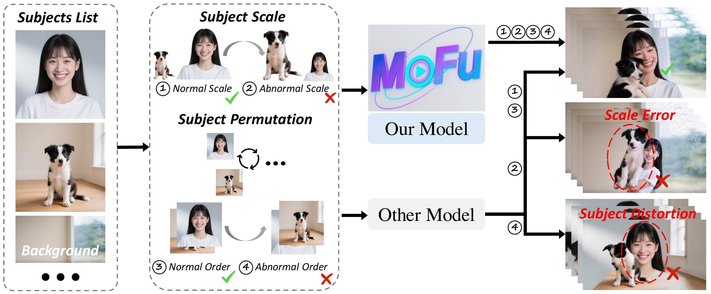
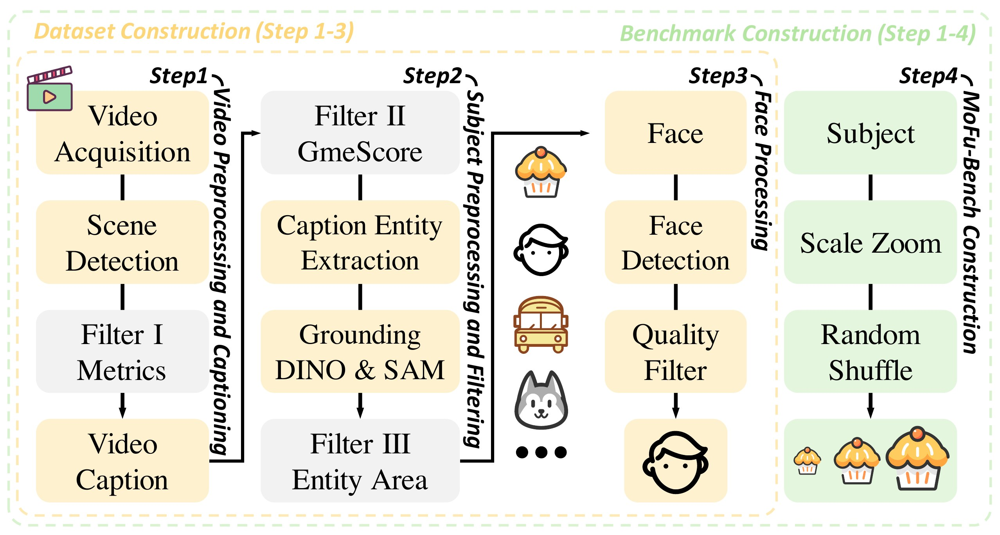
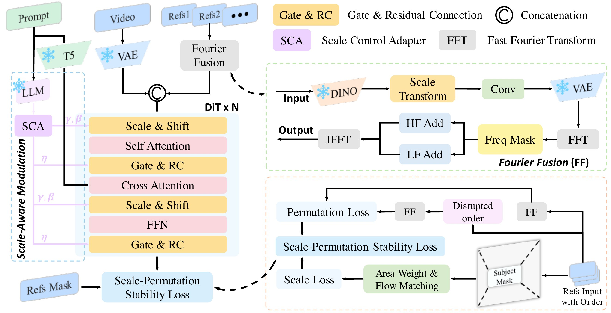
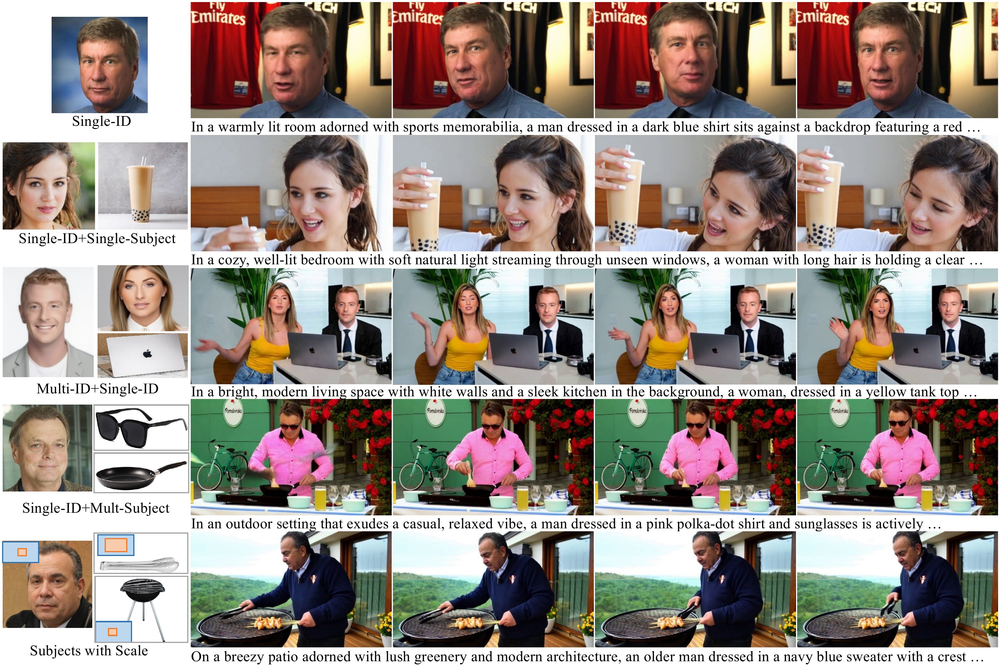
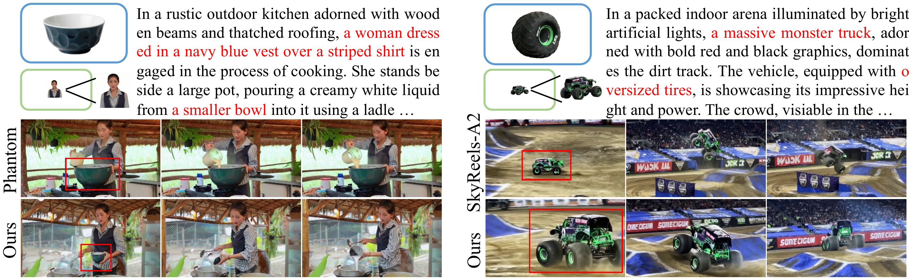
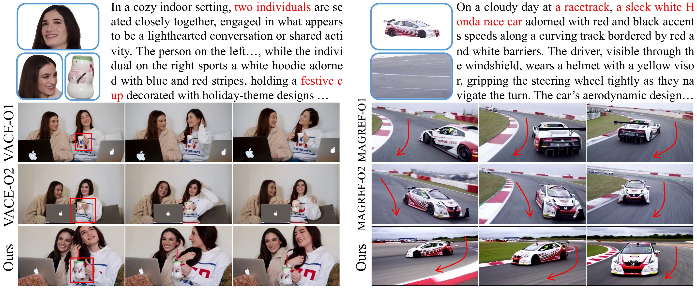
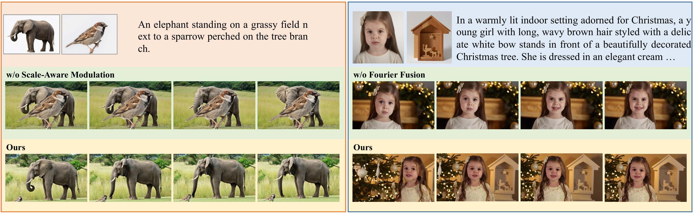
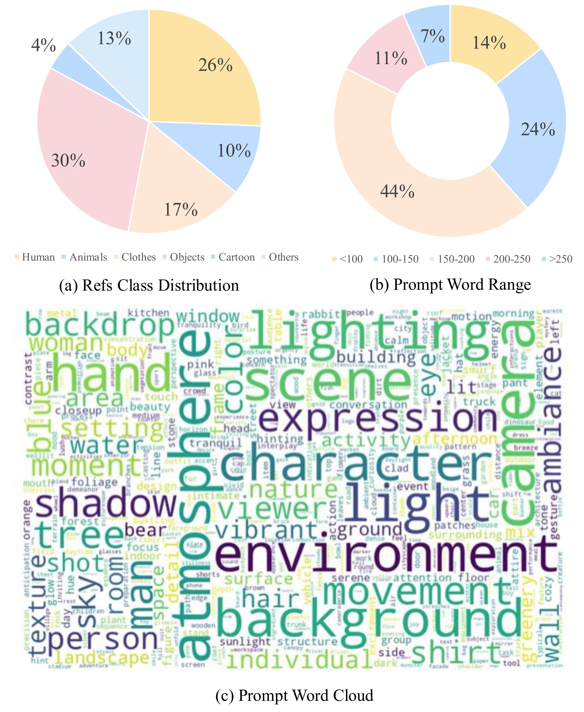

🎮 费曼一分钟
任务：多主体视频生成——给定文本 + 多张参考图，生成多主体一致、尺度自然的视频。
痛点 ① 尺度不一致：参考图里主体大小各异 → 生成时大象/麻雀比例失真。痛点 ② 排列敏感：参考图输入顺序一变 → 主体缺失或扭曲。
MoFu：DiT 骨干 + SMO（冻结 LLM 从 prompt 抽尺度关系 → Scale Control Adapter 调制 DiT 特征）+ Fourier Fusion（多参考特征 FFT → 高低频分别求和 → IFFT，利用高维近似正交实现排列不变）+ SPSL（面积加权 scale loss + 排列 permutation loss）。
数据/评测：MoFu-1M（100 万 clip、81 帧、RGBA 参考）；MoFu-Bench（1000 对，可控尺度扰动 + 参考顺序打乱）。MoFu-Bench 上 6 项指标全面 SOTA，ScaleScore 0.585。
📄 Figure 1：两大挑战示意

Abstract
Multi-subject video generation aims to synthesize videos from textual prompts and multiple reference images, ensuring that each subject preserves natural scale and visual fidelity. However, current methods face two challenges: scale inconsistency, where variations in subject size lead to unnatural generation, and permutation sensitivity, where the order of reference inputs causes subject distortion.
In this paper, we propose MoFu, a unified framework that tackles both challenges. For scale inconsistency, we introduce Scale-Aware Modulation (SMO), an LLM-guided module that extracts implicit scale cues from the prompt and modulates features to ensure consistent subject sizes. To address permutation sensitivity, we present a simple yet effective Fourier Fusion strategy that processes the frequency information of reference features via the Fast Fourier Transform to produce a unified representation. Besides, we design a Scale-Permutation Stability Loss to jointly encourage scale-consistent and permutation-invariant generation.
To further evaluate these challenges, we establish a dedicated benchmark with controlled variations in subject scale and reference permutation. Extensive experiments demonstrate that MoFu significantly outperforms existing methods in preserving natural scale, subject fidelity, and overall visual quality.
多主体视频生成旨在根据文本提示与多张参考图合成视频，使每个主体保持自然尺度与视觉保真度。然而现有方法面临两大挑战：尺度不一致——主体尺寸差异导致生成不自然；排列敏感性——参考图输入顺序变化导致主体扭曲。
本文提出统一框架 MoFu 同时应对上述挑战。针对尺度不一致，引入 尺度感知调制（SMO）：LLM 引导模块从 prompt 提取隐式尺度线索并调制特征，保证主体尺寸一致。针对排列敏感性，提出 Fourier Fusion：对参考特征做 FFT 处理频域信息，得到统一表征。此外设计 尺度–排列稳定性损失（SPSL），联合鼓励尺度一致与排列不变的生成。
为进一步评测上述挑战，建立含可控主体尺度与参考排列变化的专用 benchmark。大量实验表明 MoFu 在保持自然尺度、主体保真与整体视觉质量方面显著优于现有方法。
Phantom、MAGREF 等多参考 I2V 侧重 identity，不显式建模参考图尺度差异与顺序。MoFu-Bench 首次系统评测这两维。
1. Introduction
Multi-subject video generation aims to synthesize videos from textual prompts and multiple reference images, producing temporally consistent results where each subject preserves visual fidelity, appears at a natural scale, and remains unaffected by permutations of reference images.
Despite recent progress, multi-subject video generation faces two challenges. The first is scale inconsistency: reference images often vary significantly in subject scales due to different zoom levels, causing subjects in generated videos to appear unnaturally large or small. Another is permutation sensitivity: existing methods process images sequentially, inserting them one by one along the frame or channel dimension. This leads to subject distortion, disappearance, or physically implausible interactions that depend on the input order.
Several recent works attempt to address scale inconsistency by fusing textual prompts into the reference image representation. However, without an explicit mechanism to interpret and enforce natural scale, these methods produce subjects with unnatural scales that contradict the prompt, especially when the reference images themselves vary significantly in scale. To address permutation sensitivity, some methods concatenate multiple reference images onto a single blank canvas. While this avoids sequential processing, it introduces spatial biases determined by subject placement in the composite image.
To address these challenges, we propose MoFu, a unified framework that tackles both scale inconsistency and permutation sensitivity. For the former, we introduce Scale-Aware Modulation (SMO), an LLM-based module that extracts implicit scale relationships from the prompt and injects the condition into the model via modulation. For the latter, we propose a simple yet effective Fourier Fusion strategy that aggregates reference features in the frequency domain via FFT, leveraging near-orthogonality to produce a permutation-invariant representation. We also introduce the Scale-Permutation Stability Loss and construct MoFu-1M and MoFu-Bench.
多主体视频生成旨在根据文本提示与多张参考图合成时序一致的视频，使每个主体保持视觉保真、自然尺度，且不受参考图排列影响。
尽管已有进展，仍面临两大挑战。其一是尺度不一致：参考图因 zoom 不同导致主体尺度差异大，生成视频中主体显得过大或过小。其二是排列敏感性：现有方法按序逐张插入参考（沿帧或通道维），导致主体扭曲、消失或物理不合理的交互，且参考数增多时计算成本陡增。
近期工作尝试将文本 prompt 融入参考图表征以缓解尺度不一致，但缺乏显式解释与 enforce 自然尺度的机制，尤其在参考图本身尺度差异大时仍会产生与 prompt 矛盾的尺度。针对排列敏感性，部分方法将多张参考拼到空白 canvas；虽避免逐序处理，但 composite 图中主体位置引入空间偏置。
为此提出 MoFu 统一框架。对前者：Scale-Aware Modulation（SMO），LLM 模块从 prompt 提取隐式尺度关系并经调制注入模型。对后者：Fourier Fusion，FFT 后在频域聚合参考特征，利用近正交性得到排列不变表征。另引入 Scale-Permutation Stability Loss，并构建 MoFu-1M 与 MoFu-Bench。
Ke Cao、Ao Ma 等亦参与 FancyVideo、Qihoo-T2X、Lay2Story。MoFu 聚焦多参考 I2V 的条件鲁棒性，与单主体 ConsisID 路线互补。
Phantom / SkyReels 融 prompt 仍缺显式尺度机制；MAGREF 拼 canvas 仍有空间偏置 — 左栏第二段所批评的方法类型。
3.2 Dataset & Benchmark
To train and evaluate MoFu, we construct a high-quality multi-subject video dataset, MoFu-1M, and a dedicated benchmark, MoFu-Bench, specifically designed to assess scale consistency and permutation invariance.
- Video Preprocessing and Captioning. Large-scale raw videos are segmented into coherent clips using scene detection. Low-quality clips are filtered via aesthetic and motion metrics, and the remaining clips are automatically captioned with Qwen2.5-VL.
- Subject Processing and Filtering. We first filter out videos with poor text–video alignment using GmeScore. Next, we extract entities (e.g., people, animals, objects) from captions using LLM-based parsing and localize them in video frames with Grounded-SAM. Finally, we filter out videos where the extracted subjects are either too large or too small based on their relative area in the frames.
- Face Processing. Faces, which require higher fidelity, undergo additional detection and filtering to preserve identity clarity, completing the final MoFu-1M dataset.
- MoFu-Bench Construction. We build MoFu-Bench by introducing controlled variations to the reference images: subject-centric zoom operations to create scale inconsistencies and randomly shuffled reference order to simulate permutation changes.
为训练与评测 MoFu，构建高质量多主体视频数据集 MoFu-1M 与专用 benchmark MoFu-Bench，专测尺度一致性与排列不变性。
- 视频预处理与 caption。 大规模原始视频经场景检测切分为连贯 clip；低质 clip 用美学与运动指标过滤；剩余 clip 用 Qwen2.5-VL 自动 caption。
- 主体处理与过滤。 先用 GmeScore 过滤图文不对齐视频；LLM 解析 caption 中实体（人/动物/物体）并用 Grounded-SAM 在帧中定位；最后按帧内相对面积过滤过大/过小主体。
- 人脸处理。 人脸需更高保真，额外检测与过滤以保证 identity 清晰，完成 MoFu-1M。
- MoFu-Bench 构建。 对参考图引入可控变化：subject-centric zoom 制造尺度不一致，并随机 shuffle 参考顺序模拟排列变化。
流水线与 Fig.3 对应；规模与 Benchmark 细节见下一行 Implementation Details。
We train our model on a high-quality, self-curated video dataset. Starting from 15M clips obtained after scene detection, we perform a two-stage filtering process to ensure semantic alignment and appropriate subject visibility. This yields 2.5M high-quality clips, each paired with multiple reference images stored as RGBA. Each clip consists of 81 frames. From these, we select 1M unique clips to form the final training set MoFu-1M.
To evaluate scale consistency and permutation invariance, we construct MoFu-Bench, a dedicated benchmark with 1,000 subject-text pairs. Cases are partially adapted from ConsisID, A2-Bench, and OpenS2V-Bench, with the remainder curated for broad subject diversity. Each case includes up to three reference images with systematic scale variations and randomized permutations, paired with a high-quality prompt for semantic alignment. Compared to existing benchmarks, MoFu-Bench is the first to explicitly assess both scale consistency and permutation invariance.
在自策展高质量视频数据集上训练。场景检测后得 1500 万 clip，经两阶段过滤保证语义对齐与主体可见性，得 250 万高质量 clip，每 clip 配多张 RGBA 参考图，每 clip 81 帧；从中选 100 万 unique clip 构成 MoFu-1M。
为评测尺度一致性与排列不变性，构建 MoFu-Bench：1000 组 subject–text 对，部分改编自 ConsisID、A2-Bench、OpenS2V-Bench，其余人工策展以保证主体多样性；每例最多 3 张参考，含系统尺度变化与随机排列，并配高质量 prompt。相较现有 benchmark，MoFu-Bench 首次显式评测尺度一致性与排列不变性。
MoFu-Bench 参考类别：human 26%、animals 17%、objects 30%、clothing 10%、cartoons 4%、others 13%。Prompt 长度多 100–200 词（Fig.8 / 附录）。
| Stage | Input | Output | Tools / threshold |
|---|---|---|---|
| Scene detection | Raw videos | Coherent clips | PySceneDetect |
| Filter I | Clips | High-quality clips | Aesthetic + motion metrics |
| Captioning | Clips | Text–video pairs | Qwen2.5-VL |
| Filter II | Caption + video | Aligned samples | GmeScore |
| Subject extraction | Entity list | Mask + crop | LLM parsing + Grounded-SAM |
| Filter III | Subject mask | Area-valid samples | Entity area ratio |
| Face branch | Face regions | Identity-clear refs | Face detector + filter |
| Bench perturbation | Reference images | Scale ↑↓ + shuffle | Subject-centric zoom |
| 阶段 | 输入 | 输出 | 工具 / 阈值 |
|---|---|---|---|
| 场景检测 | 原始视频 | 连贯 clip | PySceneDetect |
| Filter I | Clip | 高质量 clip | 美学 + 运动指标 |
| Caption | Clip | 图文对 | Qwen2.5-VL |
| Filter II | Caption + 视频 | 对齐样本 | GmeScore |
| 主体提取 | 实体列表 | Mask + crop | LLM 解析 + Grounded-SAM |
| Filter III | 主体 mask | 面积合格样本 | 实体面积比 |
| 人脸支路 | 人脸区域 | identity 清晰参考 | 人脸检测 + 过滤 |
| Bench 扰动 | 参考图 | 尺度放大/缩小 + shuffle | Subject-centric zoom |
Filter I–III 逐级收紧：画质/运动 → 图文对齐 → 主体定位与面积。MoFu-1M 为 SPSL 提供监督（ref mask 面积 $a_r$）；MoFu-Bench 在参考侧做 controlled variation，测泛化到刻意扰动。
📄 Figure 3：MoFu-1M / MoFu-Bench 构建

3. Method
📄 Figure 2：MoFu 总览

3.3.1 Scale-Aware Modulation（SMO）
Step 1 · 尺度语义编码
$p$：文本 prompt；LLM 为冻结 Qwen2.5；附录用专用 instruction 让 LLM 推断实体间相对大小，取 [CLS] embedding 作为 $\mathbf{e}_p$（非自由文本输出）。
Step 2 · Scale Control Adapter（SCA）
$f_{\text{SCA}}$：轻量 MLP；$\gamma,\beta,\eta \in \mathbb{R}^{d}$，逐 channel 的 scale / shift / gate。
Step 3 · 特征调制（每个 DiT block 的 MHA 或 FFN 前）
$\mathbf{F} \in \mathbb{R}^{B \times L \times d}$：batch $B$，token 数 $L$（81 帧 × 空间 patch），隐藏维 $d$；$\odot$ 为 broadcast 逐元素乘；Layer = MHA 或 FFN；$\eta$ 门控残差强度。
| 符号 | 维度 | 含义 |
|---|---|---|
| $p$ | 字符串 | 输入文本 prompt |
| $\mathbf{e}_p$ | $\mathbb{R}^{d}$ | 冻结 LLM 的尺度语义 embedding |
| $\gamma,\beta,\eta$ | $\mathbb{R}^{d}$ | SCA 输出的 scale / shift / gate |
| $\mathbf{F}$ | $B \times L \times d$ | DiT block 输入特征 |
| $\hat{\mathbf{F}}$ | $B \times L \times d$ | 仿射调制后特征 |
| $\mathbf{F}_{\text{out}}$ | $B \times L \times d$ | 门控残差输出，送入下一子层 |
The purpose of SMO is to explicitly capture scale relationships from the textual prompt and inject them into the generation process. We first encode the prompt $p$ using a frozen LLM to obtain a semantic embedding $\mathbf{e}_p = \text{LLM}(p)$, then pass it through a lightweight Scale Control Adapter (SCA) to predict modulation parameters $\gamma, \beta, \eta = f_{\text{SCA}}(\mathbf{e}_p)$.
Given a DiT block feature map $\mathbf{F}$, SMO performs adaptive feature modulation: $\hat{\mathbf{F}} = \gamma \odot \mathbf{F} + \beta$, $\mathbf{F}_{out} = \mathbf{F} + \eta \cdot \text{Layer}(\hat{\mathbf{F}})$, where $\text{Layer}$ represents either the MHA or FFN module. This modulation is inserted at MHA and FFN layers, ensuring natural subject scales.
SMO 旨在从文本 prompt 显式捕获尺度关系并注入生成过程。先用冻结 LLM 编码 prompt $p$ 得语义 embedding $\mathbf{e}_p = \text{LLM}(p)$，再经轻量 Scale Control Adapter（SCA）预测调制参数 $\gamma, \beta, \eta = f_{\text{SCA}}(\mathbf{e}_p)$。
对 DiT block 特征图 $\mathbf{F}$，SMO 做自适应特征调制：$\hat{\mathbf{F}} = \gamma \odot \mathbf{F} + \beta$，$\mathbf{F}_{out} = \mathbf{F} + \eta \cdot \text{Layer}(\hat{\mathbf{F}})$，其中 $\text{Layer}$ 为 MHA 或 FFN。该调制插入 MHA 与 FFN 层，保证主体自然尺度。
AdaLN：单全局向量调 scale/shift。SMO：LLM 从「大象与麻雀」类描述抽相对尺度关系 → SCA → 逐 block 注入；尺度来自 prompt 语义，非参考 bbox。消融：无 SMO 时 sparrow 相对 elephant 过大（Fig.7 左）。
3.3.2 Fourier Fusion
Step 1 · 参考预处理与编码
$N$ 张参考 $\{x_1,\ldots,x_N\}$；$\mathcal{E}$ 为 $3\times3$ CNN；$H,W$ 为参考特征空间分辨率。
Step 2 · 2D FFT 到频域
Step 3 · 径向频率 mask 分 HF / LF
$M_{\text{freq}} \in \{0,1\}^{H \times W}$：由径向频率图二值化，中心为 LF、边缘为 HF。
Step 4 · 跨参考求和（排列不变）
求和满足交换律 → 参考顺序改变不影响 $\mathcal{F}^{\text{HF/LF}}$。论文引用高维随机向量近正交（Vershynin）解释「直接相加干扰小」。
Step 5 · IFFT 重建并条件注入
$\mathbf{F}_{\text{fused}}$ 与视频 latent 特征 concat，作为多参考条件输入 DiT。
| 符号 | 维度 | 含义 |
|---|---|---|
| $x_i$ | $3 \times H_0 \times W_0$ | 第 $i$ 张参考图（crop 后） |
| $\mathbf{F}_i$ | $d \times H \times W$ | CNN 编码特征图 |
| $\mathcal{F}_i$ | $\mathbb{C}^{d \times H \times W}$ | 2D FFT 复数谱 |
| $M_{\text{freq}}$ | $H \times W$ | 径向 HF/LF 二值 mask |
| $\mathcal{F}^{\text{HF/LF}}$ | $\mathbb{C}^{d \times H \times W}$ | $N$ 张参考 HF 或 LF 之和 |
| $\mathbf{F}_{\text{fused}}$ | $d \times H \times W$ | 融合后实空间特征，concat 进 DiT |
To address permutation sensitivity, we propose the Fourier Fusion strategy, which aggregates multiple reference images without introducing positional or order bias. Given $N$ reference images, we apply Grounded-SAM to segment each image, crop and resize subject regions, and encode each with a $3 \times 3$ CNN to obtain feature maps $\mathbf{F}_i$.
Each feature map is transformed into the frequency domain using FFT and decomposed into high-frequency (HF) and low-frequency (LF) components using a radial frequency mask $M_{\text{freq}}$. Leveraging the near-orthogonality of high-dimensional vectors, we aggregate these components across all references by simple summation, then reconstruct via IFFT. The fused representation is concatenated with the video features to condition the generation process.
为应对排列敏感性，提出 Fourier Fusion：聚合多张参考图且不引入位置或顺序偏置。对 $N$ 张参考，Grounded-SAM 分割各图，crop 并 resize 主体区域，再经 $3 \times 3$ CNN 编码得特征图 $\mathbf{F}_i$。
各特征图 FFT 到频域，用径向频率 mask $M_{\text{freq}}$ 分解为高频（HF）与低频（LF）。利用高维向量近正交性，跨参考对分量简单求和，再 IFFT 重建；融合表征与视频特征 concat 以条件化生成。
无 Fourier Fusion：换参考顺序 → 丢 wooden box / 赛车倒退。有 FF：任意排列均完整生成。Permutation loss 训练时进一步约束 $F(\mathcal{R}_p)$ 一致。
频域求和满足交换律 → 排列不变；Vershynin 近正交启发式解释「直接相加干扰小」。
求和不区分「哪张参考对应哪个主体」——适合多主体同框、各 ref 各管一个 identity；精细 ref-to-subject 绑定仍弱于 MAGREF 式对齐。
3.3.3 Scale-Permutation Stability Loss（SPSL）
Scale loss. The scale loss leverages reference masks and their relative area ratios to adaptively re-weight the standard flow-matching loss:
$$\mathbf{M} = \sum_{r=1}^{R} w_r \cdot \text{Resize}(m_r),\quad w_r = \frac{\exp(a_r)}{\sum_{r'} \exp(a_{r'})}$$
$$\mathcal{L}_{\text{scale}} = \frac{\sum (\mathcal{L}_{\text{mse}} \odot \mathbf{M})}{\sum \mathbf{M} + \epsilon}$$
Permutation loss. To ensure that the change in the permutation of references does not affect the generation, we compute an MSE loss in the frequency domain across $P$ permutations of reference inputs:
$$\mathcal{L}_{\text{perm}} = \frac{1}{P} \sum_{p=1}^{P} \left\| F(\mathcal{R}_p) - F(\mathcal{R}_{\text{ref}}) \right\|_2^2$$
$$\mathcal{L}_{\text{SPSL}} = \mathcal{L}_{\text{scale}} + \mathcal{L}_{\text{perm}}$$
Scale loss。 利用参考 mask 及其相对面积比，自适应重加权标准 flow-matching 损失：
$$\mathbf{M} = \sum_{r=1}^{R} w_r \cdot \text{Resize}(m_r),\quad w_r = \frac{\exp(a_r)}{\sum_{r'} \exp(a_{r'})}$$
$$\mathcal{L}_{\text{scale}} = \frac{\sum (\mathcal{L}_{\text{mse}} \odot \mathbf{M})}{\sum \mathbf{M} + \epsilon}$$
Permutation loss。 为保证参考排列变化不影响生成，对 $P$ 种参考排列，在频域计算 MSE：
$$\mathcal{L}_{\text{perm}} = \frac{1}{P} \sum_{p=1}^{P} \left\| F(\mathcal{R}_p) - F(\mathcal{R}_{\text{ref}}) \right\|_2^2$$
$$\mathcal{L}_{\text{SPSL}} = \mathcal{L}_{\text{scale}} + \mathcal{L}_{\text{perm}}$$
主任务：flow-matching loss $\mathcal{L}_{\text{FM}}$。辅助：$\mathcal{L}_{\text{SPSL}} = \mathcal{L}_{\text{scale}} + \mathcal{L}_{\text{perm}}$。Scale loss 强调相对面积更大主体的重建；Perm loss 约束 Fourier Fusion 输出对排列不变。论文未单独报告 $\lambda$ — 两项直接相加。
4.1 Training Strategies
We train our model using the AdamW optimizer, configured with $\beta_1 = 0.9$, $\beta_2 = 0.999$, and a weight decay of 0.01. The learning rate is initialized at $1 \times 10^{-5}$ and follows a cosine annealing schedule with periodic restarts. Model training is conducted on 16 NVIDIA H800 GPUs for 7 days. Input videos are processed at a resolution of 480P, with a sequence length of 81 frames.
| Item | Configuration |
|---|---|
| Optimizer | AdamW |
| $\beta_1, \beta_2$ | 0.9, 0.999 |
| Weight decay | 0.01 |
| Learning rate | $1 \times 10^{-5}$ (initial) |
| LR schedule | Cosine annealing with periodic restarts |
| Hardware | 16 × NVIDIA H800 |
| Training time | 7 days |
| Resolution | 480P |
| Sequence length | 81 frames / clip |
| Training data | MoFu-1M (1M clips, RGBA refs) |
| Objective | Flow-matching + SPSL |
使用 AdamW 优化器，$\beta_1 = 0.9$，$\beta_2 = 0.999$，weight decay 0.01。学习率初值 $1 \times 10^{-5}$，余弦退火并周期重启。16 块 NVIDIA H800 训练 7 天。输入视频 480P 分辨率，序列长度 81 帧。
| 项 | 配置 |
|---|---|
| 优化器 | AdamW |
| $\beta_1, \beta_2$ | 0.9, 0.999 |
| Weight decay | 0.01 |
| 学习率 | $1 \times 10^{-5}$（初值） |
| LR schedule | 余弦退火 + 周期重启 |
| 硬件 | 16 × NVIDIA H800 |
| 训练时长 | 7 天 |
| 分辨率 | 480P |
| 序列长度 | 81 帧 / clip |
| 训练数据 | MoFu-1M（100 万 clip，RGBA 参考） |
| 目标函数 | Flow-matching + SPSL |
标准 DiT flow-matching 栈；SMO 中 LLM 冻结，SCA + DiT + Fourier Fusion CNN 可训。480P×81 帧 × 16 H800 × 7 天 — 算力与数据门槛高。SPSL 与 SMO/FF 耦合，论文因此未单独消融 SPSL 子项。
flowchart TB
subgraph inputs [Inputs]
P[Text prompt p] --> LLM[Frozen LLM]
R[Ref images x1..xN] --> SAM[Grounded-SAM + CNN E]
end
LLM --> SCA[Scale Control Adapter]
SCA --> SMO[SMO modulate DiT MHA/FFN]
SAM --> FFT[FFT → sum HF/LF → IFFT]
FFT --> FF[Fourier Fusion cond]
Z[Video latent] --> DiT[DiT backbone]
SMO --> DiT
FF --> DiT
DiT --> SPSL[SPSL: scale + perm loss]
4. Experiments
As shown in Tab., MoFu achieves state-of-the-art performance across nearly all metrics on MoFu-Bench. It attains the highest Aesthetics and FaceSim scores, producing visually appealing videos with strong identity preservation. MoFu also leads on GmeScore, reflecting superior text–video alignment, and achieves balanced Motion results by maintaining temporal coherence without sacrificing fidelity. Moreover, it yields substantial gains on ScaleScore and SubjectSim, demonstrating robust scale consistency and subject stability across permutations.
| Method | Aesth↑ | FaceSim↑ | Gme↑ | Motion↔ | Scale↑ | Subj↑ |
|---|---|---|---|---|---|---|
| Phantom | 0.355 | 0.375 | 0.706 | 0.229 | 0.536 | 0.748 |
| SkyReels-A2 | 0.286 | 0.341 | 0.691 | 0.233 | 0.527 | 0.737 |
| VACE | 0.392 | 0.247 | 0.732 | 0.214 | 0.547 | 0.692 |
| MAGREF | 0.369 | 0.362 | 0.717 | 0.207 | 0.511 | 0.731 |
| MoFu | 0.401 | 0.396 | 0.745 | 0.221 | 0.585 | 0.755 |
如表所示，MoFu 在 MoFu-Bench 上几乎全指标达到 SOTA。Aesthetics 与 FaceSim 最高，生成视频美观且 identity 保持强。GmeScore 亦领先，反映更优图文对齐；Motion 在保持时序连贯的同时未牺牲保真度。ScaleScore 与 SubjectSim 提升显著，表明尺度一致性与排列下主体稳定性 robust。
六项指标定义见 附录 · Evaluation Metrics。MoFu ScaleScore 0.585 vs VACE 0.547 领先最明显；SubjectSim 0.755 亦第一。
Motion 非最优（0.221 vs SkyReels 0.233）— 未以运动平滑为主打。
📄 Figure 4–8：定性 / 对比 / 消融 / Benchmark 统计





附录 · Evaluation Metrics
Following the evaluation principles established in OpenS2V, we adopt six complementary metrics (Appendix · Experiments).
Aesthetics: We evaluate the perceptual quality and artistic appeal of the generated frames with Aesthetics Score, using an aesthetics prediction model trained on large-scale image quality datasets. Higher scores indicate visually pleasing and artifact-free results.
FaceSim: For videos containing human subjects, we employ FaceSim to measure the similarity between generated faces and reference faces using a face recognition network (e.g., ArcFace).
GmeScore: We use GmeScore, a retrieval-based metric built on a Qwen2-VL model fine-tuned for vision-language alignment, to quantify how accurately the model maintains subject shapes and key structural features.
Motion Score: We assess temporal coherence by Motion Score, implemented by OpenCV, measuring inter-frame motion stability using optical flow smoothness and frame-level warping error.
ScaleScore: To evaluate ScaleScore, we leverage GPT-4o to judge whether the relative sizes of subjects in the generated video match the relationships implied by the input prompt. We provide GPT-4o with the text description and 10 sampled frames from the video, and ask it to output a scale consistency score from 1 to 5.
SubjectSim: SubjectSim measures the overall similarity between generated subjects and their reference images, combining accurate subject localization and feature similarity. We obtain subject masks in reference images using GroundSAM; for sampled generated frames, candidate regions are detected and matched to the reference subject via CLIP feature similarity.
Aesthetics： 用 Aesthetics Score 评估生成帧感知质量与艺术性，基于大规模图像质量数据集训练的美学预测模型；分数越高表示越美观、伪影越少。
FaceSim： 含人类主体时，用 FaceSim（如 ArcFace 人脸识别网络）度量生成脸与参考脸的相似度，保证面部结构与属性。
GmeScore： 基于微调 Qwen2-VL 的检索指标，量化主体形状与关键结构特征保持程度。
Motion Score： 用 OpenCV 实现，以光流平滑度与帧级 warp error 度量帧间运动稳定性；运动伪影越少分数越高。
ScaleScore： 用 GPT-4o 判断生成视频中主体相对大小是否符合 prompt 隐含关系；输入文本描述与 10 帧采样，输出 1–5 分尺度一致性。
SubjectSim： 度量生成主体与参考图整体相似度，结合定位与特征相似；参考侧 GroundSAM 得 mask，生成帧检测候选区域并经 CLIP 匹配。
Aesthetics / Motion → 画质与时序；FaceSim / SubjectSim → identity；GmeScore → 图文语义；ScaleScore → 本文核心贡献维度。MoFu ScaleScore 0.585 vs VACE 0.547 领先最明显。
SubjectSim matching (frame $t$, subject $i$):
$$j^{*} = \arg\max_j \frac{f(b_{t,j}) \cdot f(S^{\text{ref}}_i)}{\|f(b_{t,j})\| \|f(S^{\text{ref}}_i)\|}$$
where $b_{t,j}$ is the $j$-th detected region at frame $t$ and $S^{\text{ref}}_i$ is the reference subject. We then compute the cosine similarity of the matched regions' CLIP embeddings and average over all frames and subjects:
$$\text{SubjectSim} = \frac{1}{N} \sum_{i=1}^{N} \frac{1}{T} \sum_{t=1}^{T} \frac{f(S^{\text{gen}}_{i,t}) \cdot f(S^{\text{ref}}_i)}{\|f(S^{\text{gen}}_{i,t})\| \|f(S^{\text{ref}}_i)\|}$$
Higher SubjectSim values indicate better preservation of subject identity and appearance. Together, these metrics provide a holistic evaluation of spatial coherence, subject identity preservation, temporal stability, and scale robustness.
SubjectSim 匹配（帧 $t$、主体 $i$）：
$$j^{*} = \arg\max_j \frac{f(b_{t,j}) \cdot f(S^{\text{ref}}_i)}{\|f(b_{t,j})\| \|f(S^{\text{ref}}_i)\|}$$
其中 $b_{t,j}$ 为帧 $t$ 第 $j$ 个检测区域，$S^{\text{ref}}_i$ 为参考主体。对匹配区域 CLIP embedding 求余弦相似度，再对所有帧与主体平均：
$$\text{SubjectSim} = \frac{1}{N} \sum_{i=1}^{N} \frac{1}{T} \sum_{t=1}^{T} \frac{f(S^{\text{gen}}_{i,t}) \cdot f(S^{\text{ref}}_i)}{\|f(S^{\text{gen}}_{i,t})\| \|f(S^{\text{ref}}_i)\|}$$
SubjectSim 越高表示主体 identity 与外观保持越好。六项指标合评空间连贯、身份、时序与尺度鲁棒性。
ScaleScore 依赖 GPT-4o API；Aesthetics/GmeScore 需特定预训练权重。SubjectSim 与 FaceSim 相对可复现。论文 MoFu-Bench 为统一评测协议。
5. Conclusion
We proposed MoFu, a unified framework that addresses scale inconsistency and permutation sensitivity in multi-subject video generation. By introducing Scale-Aware Modulation and the Fourier Fusion strategy, MoFu explicitly enforces natural subject scales and permutation-invariant conditioning. Besides, we build MoFu-1M for training, and establish a dedicated benchmark MoFu-Bench for assessing scale consistency and permutation-invariance.
我们提出 MoFu 统一框架，解决多主体视频生成中的尺度不一致与排列敏感性。通过 Scale-Aware Modulation 与 Fourier Fusion，MoFu 显式 enforce 自然主体尺度与排列不变条件。此外构建 MoFu-1M 用于训练，并建立专用 benchmark MoFu-Bench 以评估尺度一致性与排列不变性。
无公开代码/权重；ScaleScore 依赖 GPT-4o；Fourier 求和假设高维正交，参考数 $N$ 很大时是否仍成立未充分分析；480P 训练上限。
符号速查表
| 符号 | 含义 |
|---|---|
| SMO | Scale-Aware Modulation（LLM + SCA 调制 DiT） |
| SCA | Scale Control Adapter（MLP 预测 $\gamma,\beta,\eta$） |
| Fourier Fusion | 多参考 FFT → HF/LF 求和 → IFFT |
| SPSL | Scale-Permutation Stability Loss |
| MoFu-1M | 100 万 clip，81 帧，RGBA 多参考 |
| MoFu-Bench | 1000 对，尺度扰动 + 参考排列变化 |
| ScaleScore | GPT-4o 评估 prompt 隐式尺度一致性 |
论证总览
↓
SMO：LLM 从 prompt 抽尺度语义 → 调制 DiT 特征
↓
Fourier Fusion：频域 HF/LF 分别求和 → 排列不变多参考条件
↓
SPSL：面积加权 scale loss + 排列 permutation loss
↓
MoFu-1M 训练 + MoFu-Bench 评测 → 6 指标 SOTA，ScaleScore 提升最大
🧩 结构化十问（AI 解构）
Q1 · 解决什么问题？
Q2 · SMO 做什么？
Q3 · Fourier Fusion 为何排列不变？
Q4 · SPSL 两项损失？
Q5 · MoFu-1M 怎么建？
Q6 · MoFu-Bench 特殊在哪？
Q7 · 对比谁？结果？
Q8 · 与 Lay2Story / ConsisID 关系？
Q9 · 消融验证什么？
Q10 · 代码开源？
🔬 深挖
尺度条件：文本 vs 显式 layout
MoFu 不画 bbox，靠 LLM 理解「大象」「麻雀」等词的相对尺度 — 适合 prompt 已描述关系的数据；对「参考图很大但 prompt 没提尺度」可能仍弱，故 MoFu-Bench 用 GPT-4o ScaleScore 补评测。
频域求和 vs Attention 融合
Fourier Fusion 计算轻、顺序无关，但丢失参考间细粒度对应（谁是谁）。适合「多主体同框、各参考对应不同主体」场景；若需精确 ref-to-subject 绑定，可能仍需 cross-attn 或 MAGREF 式对齐。
批判性思维
- 正交启发式：CNN 特征经 FFT 后「直接求和」的置换不变性有实验支撑，但 $N>3$、特征纠缠时理论保证弱。
- ScaleScore 可复现性：依赖 GPT-4o，闭源 API 使 benchmark 分数难完全复现。
- 训练成本：16×H800×7 天 + 百万数据，门槛高于 training-free 1Prompt1Story 类方法。